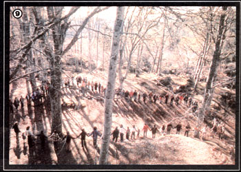

There's An Adventure For You In '82
By the Mother Earth News editors
January/February 1982
"Que no hay aventura, no hay ventura: If there's no adventure, there's no fortune." (Spanish proverb)
During our three years of sponsoring "tours that teach" to some of the most intriguing parts of our planet, we made the discovery (which didn't really surprise us all that much) that MOTHER-readers are among the most intrepid, adventurous, and downright friendly people around. We've therefore been tailoring upcoming trips to make the most of our travelers' fine characteristics . . . trying to arrange challenging expeditions that leave room for the unexpected and create unusual opportunities to interact with local populations.
In that spirit, then, we're beginning the year with a 24-day trek into Nepal's remote and rugged Arun Valley, home of the fabled yeti and the rare snow leopard. Furthermore, though it's probably now too late for you to join this January 25 journey, the coming months will be loaded with unique tours . . . and perhaps one of them will fulfill your travel fantasies.
SOLAR IN ISRAEL OR FRANCE
By doing such things as putting waterheating collectors on almost every rooftop and actually turning the Dead Sea into a solar pond to provide electricity, Israel has long led the world in alternative energy use. This year, our third Solar Tour of Israel (from February 18 to March 2, 1982) will offer more opportunities than ever to meet with top energy engineers, scientists, and manufacturers in such fields as photovoltaics (both chemical and silicon), solar-powered magnetohydrodynamics, methane production, steam power via parabolic reflectors, and more.
Woven into these investigations of tomorrow's technology will be guided tours to many of the ancient land's renowned historical sites ... including Jerusalem, Bethlehem, Nazareth, Massada, Jericho, and Caesarea, to name just a few. Better yet, despite the expanded program that Jordan College has helped us put together, the trip's $1,495 price tag (the required deposit is $200) is lower than last year's.
Additionally, finishing touches are now being worked out on a MOTHER/Jordan College Solar Tour of France, which will take place from April 30 to May 9, 1982. The cost of this investigation of France's sophisticated programs in alternative energy (which will also leave us time to enjoy the country's sights and culture) will be under $1,500, and a $200 deposit is required to hold your place.
SPRING IN SCOTLAND
You can't book a tour like our Visit to Findhorn and Friends through any travel agency, because-in addition to showing participants some of Britain's finest sights and scenery-this May 19 to June 7, 1982 trip to one of the world's most successful New Age communities offers nothing less than an exploration of in ner consciousness. (See "Findhorn: A Bright Light in a Dark World", page 32, MOTHER NO. 71. )
Flying from New York, we'll stop long enough to enjoy London before boarding a train to Scotland's beautiful northeast coast, famed for its rainbows and golden gorse. There, we'll participate in a Findhorn "Experience Week" . . . lending a hand in community tasks and attending workshops that are designed to "turn the day-to-day hard work of real life into a mystical experience".
Following that introduction, we'll join several Findhorn members on western Scotland's island of Erraid, where they're developing a new self-sufficient community, and-once again-we'll be able to share in the daily life and work involved in this undertaking. Being on Erraid will also offer us a chance to visit the neighboring sacred island of Iona, an ancient "power center" and a burial place of kings since the days of the Druids.
Our journey will end with an exploration of the fascinating city of Edinburgh, and of the breathtaking country that surrounds it.
As a result of changes in airline schedules, this trip has been extended for two days since we first announced it, and will now cost $1,650 (a $200 deposit is required).
ALPINE HIKING
Some folks who plan to participate in our Findhorn visit have already told us they'd like to combine that trip with the offering that follows it: A Wild Plant Walk in the Alps (it'll run from June 11 to 26, 1982 . . . at a cost of $1,770). After stopping in at a very special flower show in Amsterdam (which is held only once every ten years), we'll travel by train to Salzburg, Kitzbuhel, Innsbruck, Interlaken, and Geneva, where we'll explore some of Austria's and Switzerland's most spectacular mountain trails from our base camps and pensions.
This flower-filled, snow-capped experience (under the direction of Robin Woods, MOTHER's Wild Foods Seminar leader) is already more than half full. So if you'd like to see the very best in Alpine scenery, while enjoying the profusion of wild flowers and herbs that abound in this region, you'd best get your $200 deposit to us soon.
ALASKA BY RAFT
Those who really want to get away from it all would be hard pressed to find a better way to do so than by joining our 11-day rafting trip (August 15 to 26, 1982) down Alaska's Tatshenshini River . . . a waterway that's been fully explored only in the last decade. From the time we board our rafts at Dalton Post until we conclude our trip at Dry Bay (just north of Glacier Bay), our tourists will be treated to a true wilderness panorama of wildlife, flowers, virgin forests, cascading waterfalls, and icebergs that crack off the face of miles-long glaciers . . . with the aurora borealis thrown in for good measure.
This tour, coordinated by Sobek Expeditions-one of the world's foremost river-run outfitters-is priced at $1,490 from Haines, Alaska and back to Haines . . . and a $250 deposit is required. (Just getting to Haines can be a beautiful adventure in itself, particularly if you take the scenic ferry trip from Seattle.)
CHINA BY BIKE
When we returned from our 1980 trip to the People's Republic of China, we promised that our next journey to that wondrous land would be something very special . . . and it will be! From September 30 to October 20, we'll tour the Yangtze Valley by bicycle! This area, which has been the cornerstone of Chinese civilization for nearly 2,000 years, comprises a chain of ancient cities that first introduced silk, porcelain, and jade to the world beyond.
After three days of exploring Shanghai, we'll proceed to Suzhou, the venerable canal city fabled for its silk brocade and formal gardens. From there, a boat will take us on an unforgettable journey along the Grand Imperial Canal to Wuxi, where we'll bike around the shoreline of Lake Tai, whose parks and pavilions have been immortalized by poets and painters since the Tang Dynasty.
We'll then cycle to Zhenjiang, which was already noted for its silk trade during the days of Marco Polo . . . go north to Yangzhou, a long-isolated fine arts and handicrafts center . . . and then pedal on to Nanjing, the great cultural and educational hub of central China. From there, we'll cruise down the central reaches of the Yangtze and through the Purple Mountains, ending our tour with a flight to China's capital city of Beijing (where we'll visit such "musts" as the Imperial City and the Great Wall).
Best of all, on this adventure you'll have the advantage of being part of a group and the pleasure of traveling on your own . . . setting your pace-leisurely or swift-past the rice paddies, bamboo groves, and orchard communes of rural China. And the fact that you've chosen to explore this ancient land by means of its own chief modern source of transportation, the bicycle-rather than peer at it through the window of a tourist bus-will pave the way for a friendly relationship with Chinese townspeople and villagers.
Sponsored in cooperation with China Passage, Inc. and the China Sports Federation, this unusual experience will cost $2,978 . . . and a $300 deposit is required to hold one of the 20 spaces available.
All trip deposits should be made by certified check or money order. For additional information on any of these adventures, write to Mother's Tours, P.O. Box 70, Hendersonville, North Carolina 28791.
 [4] Ceasarea's Roman ruins... only one of Israel's famous sights. [5] Alaska's geology in action... [6] and unspoiled nature. [7] A mountain-meadow ramble in the Alps. [8] Findhord elegance. |
 [9] Our trip to Scotland will leave a lingering, post-Findhorn glow. |
|